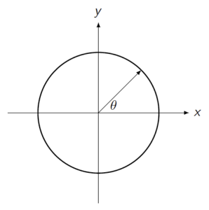
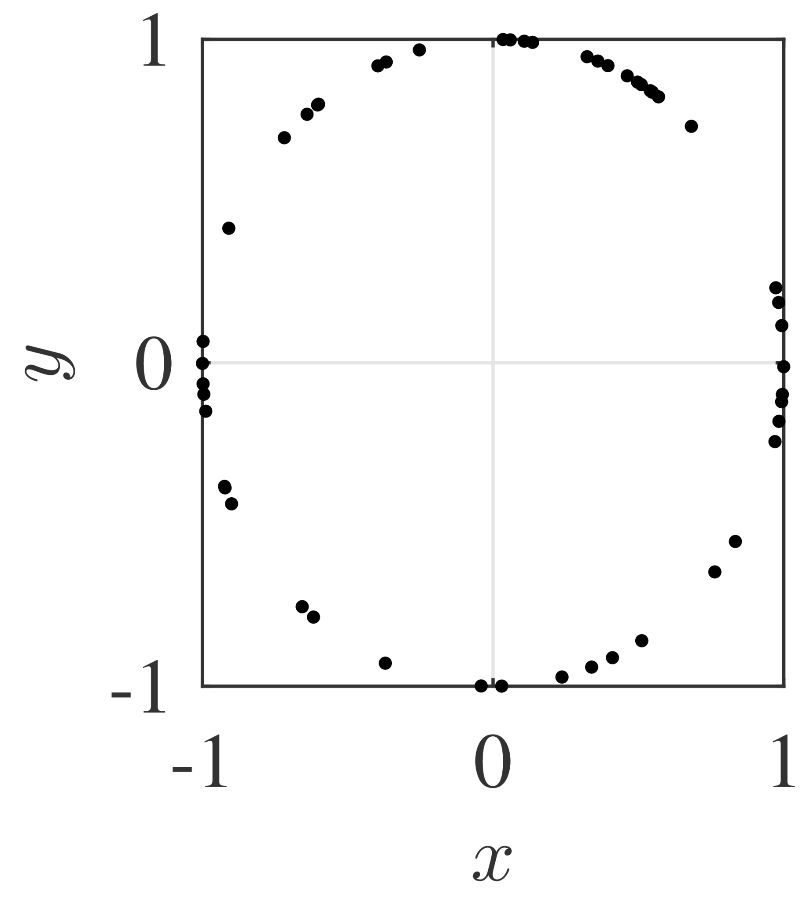
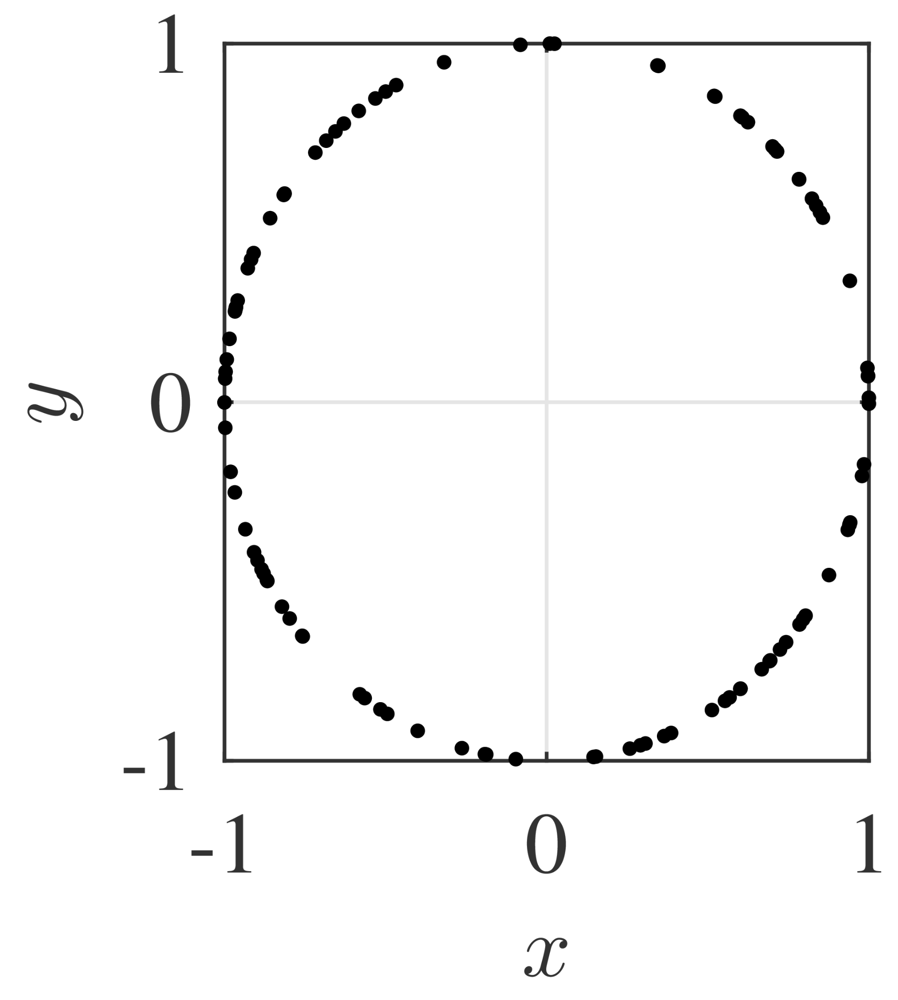
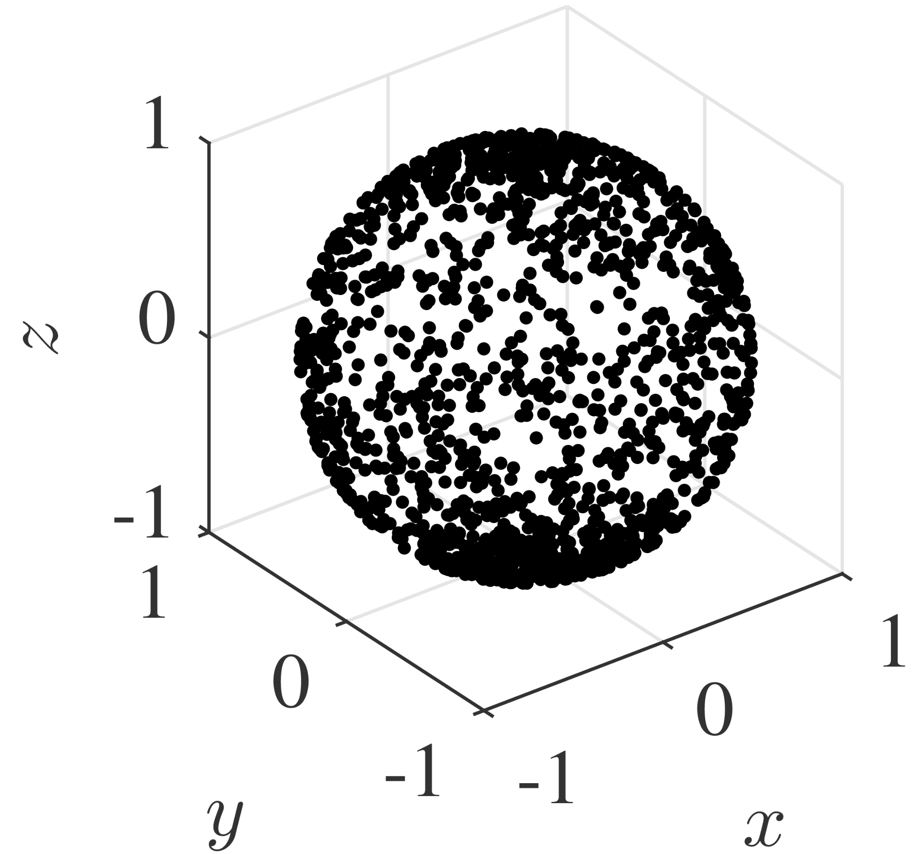
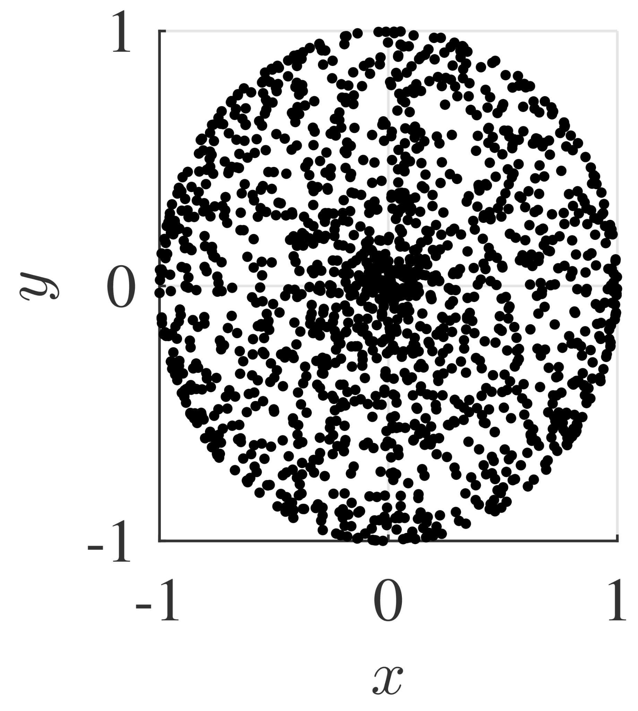
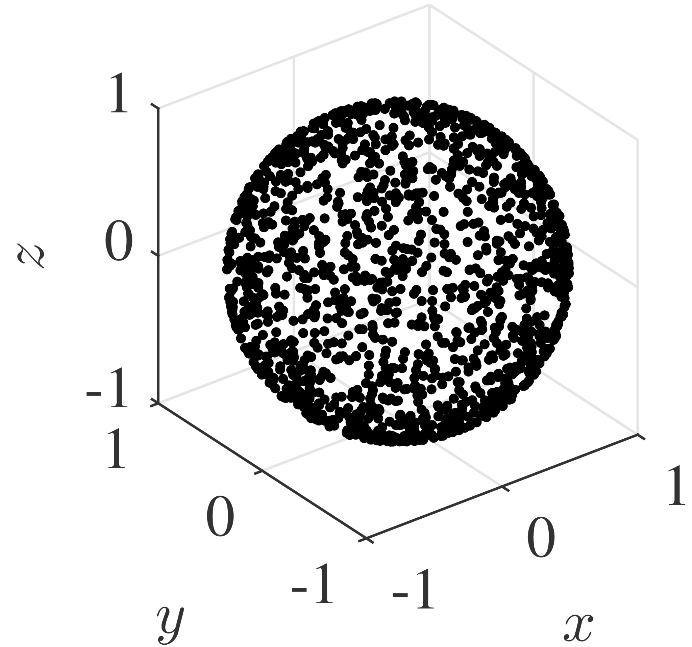
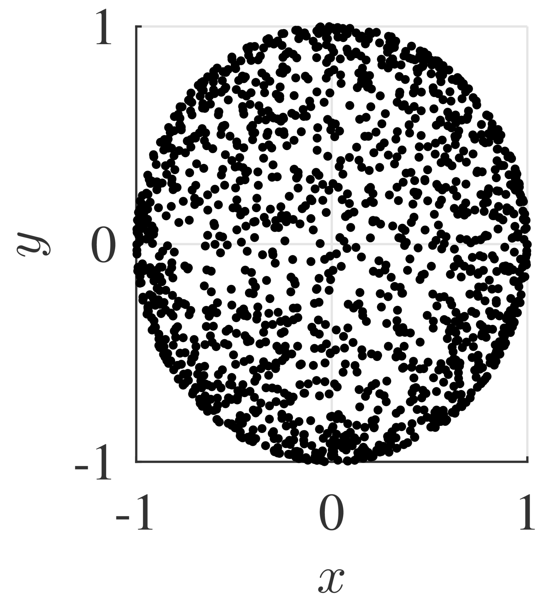

Secret Blog Post: Randomly Choosing a Direction
Suppose you want to randomly choose a direction. Maybe you're a neutrophil, a type of immune cell, and you're searching for a bacteria. Which direction should you choose? Maybe you're coding, or building a mathematical model and you want to choose a random direction to move in.
How do you uniformly choose a direction in 2-dimensions?
I think that the easiest thing to do is to uniformly pick an angle, \( \theta \in [0, 2 \pi),\) and then convert to a vector on the unit circle:
\begin{align*} x&=\cos \theta \\ y&=\sin \theta \end{align*}
This method works! If you sample 100 points from a uniform distribution on \( \theta \in [0,2\pi) \), and plot the result, it looks pretty uniform on the unit circle:
 
The reason this works is that we want any little segment of arc length on the unit circle to have the same number of points. In terms of differentials (arc-length-elements and theta-elements), we have \[ ds = \sqrt{dx^2 + dy^2} = \sqrt{d\theta^2} = d\theta \] because \(x = \cos \theta \) and \( y = \sin \theta \).
Does the same method work in 3-dimensions?
Interestingly, no! If you were to randomly choose two angles \( \theta \in [0, 2\pi) \) and \( \phi \in [0, \pi]\), and use spherical coordinates \[ x = \cos \theta \sin \phi, \quad y = \sin \theta \sin \phi, \quad z = \cos \phi, \] then you would observe cluster of points at the poles. You can see this in the figure on the left, or by looking at a top down view, as on the right:
 
This method fails in 3D due to the fact that not all latitudes have the same circumference! In other words, our method breaks because the area element \( d \Omega = \sin \phi \, d \theta \, d \phi \) is a function of \( \phi \). Note that you could choose a transformation other than spherical coordinates so that this works nicely if you wanted to (http://mathworld.wolfram.com/SpherePointPicking.html).
\(n\)-dimensional uniform distributions on the unit sphere.
It turns out that one of the easiest ways generate a uniform distribution on the \(n\)-dimension unit sphere is to actually use \( n\) normal distributions... The density function for a normally distributed random variable vector \( X \) is \[ p(x; \mu,\Sigma) = \frac{1}{\sqrt{ (2 \pi)^n \det(\Sigma)}} \exp \left( -\frac{1}{2} (x-\mu)^T \Sigma^{-1} (x-\mu) \right). \] For the sake of example, consider the case where the covariance is identity, \( \Sigma = I \), and the mean is \( \mu = \vec{0} \). Then \begin{align*} p(x;0,I) &= \frac{1}{\sqrt{ (2 \pi)^n}} \exp \left( -\frac{1}{2} \sum_{i=1}^n x_i^2 \right) \\ &= \frac{1}{\sqrt{ 2 \pi}} \exp \left( -\frac{x_1^2}{2} \right) \cdot \ldots \cdot \frac{1}{\sqrt{ 2 \pi}} \exp \left( -\frac{x_n^2}{2} \right). \end{align*} In general, we can conclude that a \( n \)-dimensional Gaussian with mean \( \mu \in \mathbb{R}^n \) and diagonal covariance matrix \( \Sigma = \text{diag}(\sigma_1^2, \dots, \sigma_n^2) \) is the same as a collection of \( n \) independent Gaussian random variables with mean \( \mu_i \) and variance \( \sigma_i^2 \). From this, we can sample uniformly random points on the \(n\)-dimension unit sphere by generatating \(n\) standard normal random variables \(x_i\) and normalizing: \[ \frac{1}{\sqrt{x_1^2 + \cdots + x_n^2}} (x_1,\dots,x_n)^T.\] On the unit sphere in \(n\)-dimensions, \( \sum_{i=1}^n x_i^2 = 1\), \[ p(x;0,I) = \frac{1}{\sqrt{ (2 \pi)^n}} \exp \left( -\frac{1}{2} \sum_{i=1}^n x_i^2 \right) = \frac{e^{-\frac{1}{2}}}{\sqrt{ (2 \pi)^n}} \] is spherically symmetric, i.e., the distribution is constant! This works! No clustering!
 